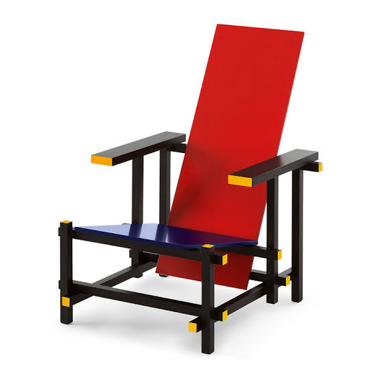

Descripción
La Silla Roja y Azul fue diseñada por el arquitecto y diseñador neerlandés Gerrit Thomas Rietveld. Es una de las obras más representativas del movimiento De Stijl y se caracteriza por el uso de líneas rectas, planos y colores primarios.
La silla transforma un objeto cotidiano en una composición geométrica donde el rojo, el azul, el amarillo y el negro adquieren un papel fundamental.
Materiales
- Estructura de madera.
- Tablas y listones de madera ensamblados.
- Pintura en colores primarios.
Contexto
La Silla Roja y Azul fue creada por Rietveld en 1917, en los Países Bajos. Su diseño está relacionado con los principios del movimiento De Stijl, que buscaba reducir las formas artísticas a elementos geométricos simples y colores básicos.
La obra utiliza una estructura formada por líneas horizontales y verticales, generando una composición que relaciona el diseño de muebles con el arte y la arquitectura.
Características
Una de las principales características de la silla es su construcción a partir de elementos independientes que se cruzan y forman una estructura geométrica.
- Formas geométricas simples.
- Líneas horizontales y verticales.
- Uso de colores primarios.
- Relación entre arte, diseño y arquitectura.